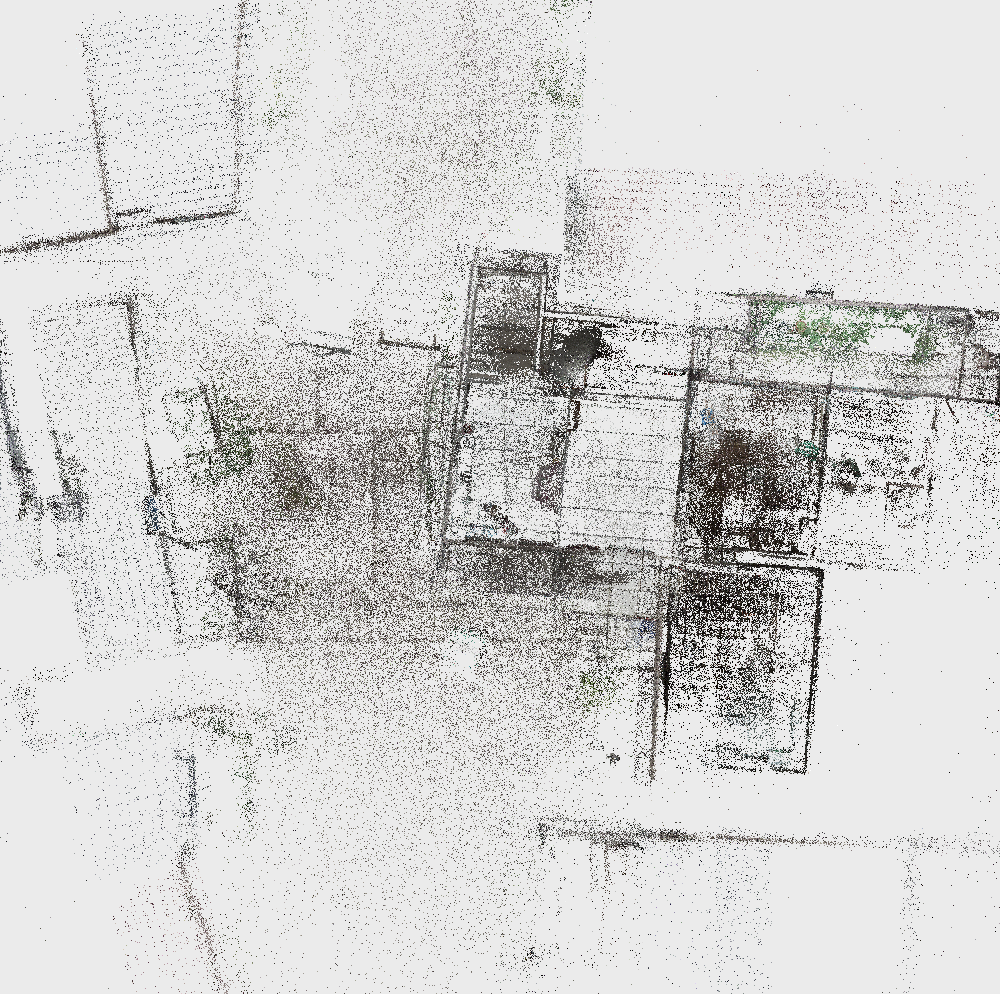

留住一座宅子的记忆
再走一次，
熟悉的地方。
从门前的光影，到墙角的纹理。
以真实采集的三维影像，重回祖宅。
拖动环顾 · 键盘行走 · 自由探索
空间导航

俯视 / Z ↑点击图中位置，落到附近地面
漫游设置
真实尺度待校准
原始数据未记录长度单位。当前采用预览比例，输入实测距离后，视高和速度才对应真实米制空间。
选择门宽、墙间距等已知长度。
数据与运行状态
采集项目：祖宅-20261007
原始高斯点：25,077,467
62 个分块 · 自适应分级加载
地面和墙体：配套重建网格
重建网格可能有孔洞；遇到阻挡可切换自由飞行。未采集区域无法补全。